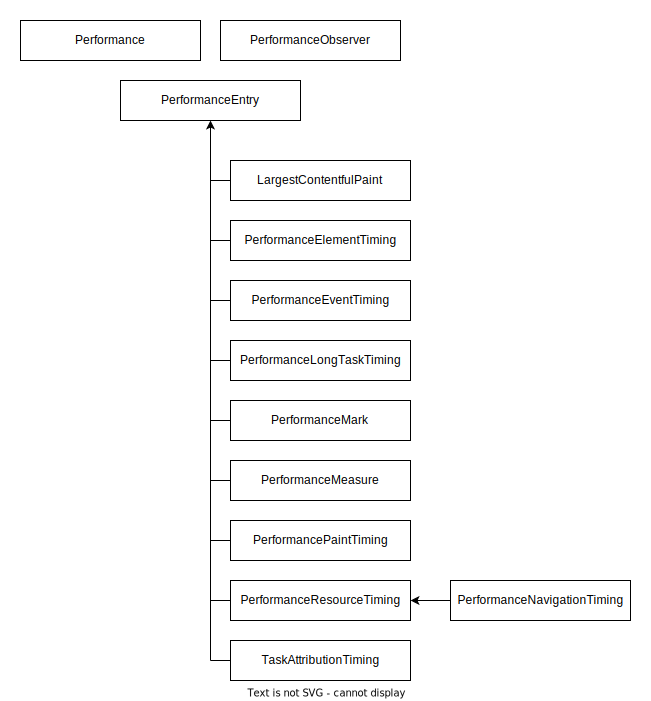

Performance API
The Performance API is a group of standards used to measure the performance of web applications.
Concepts and usage
To ensure web applications are fast, it's important to measure and analyze various performance metrics. The Performance API provides important built-in metrics and the ability to add you own measurements to the browser's performance timeline. The performance timeline contains high precision timestamps and can be displayed in developer tools. You can also send its data to analytics end points to record performance metrics over time.
Each performance metric is represented by a single PerformanceEntry. A performance entry has a name, a duration, a startTime, and a type. All performance metrics extend the PerformanceEntry interface and qualify it further.
Most of the performance entries are recorded for you without you having to do anything, and are then accessible either through Performance.getEntries() or (preferably) through PerformanceObserver. For example, PerformanceEventTiming entries are recorded for events that take longer than a set threshold. But the Performance API also enables you to define and record your own custom events, using the PerformanceMark and PerformanceMeasure interfaces.
The main Performance interface is available for each global using self.performance and enables you to add custom performance entries, to clear performance entries, and to retrieve performance entries.
The PerformanceObserver interface enables you to listen for various types of performance entry as they are recorded.

Interfaces
EventCounts-
A read-only map returned by
performance.eventCountscontaining the number of events which have been dispatched per event type. LargestContentfulPaint-
Measures the render time of the largest image or text block visible within the viewport, recorded from when the page first begins to load.
Performance-
Main interface to access performance measurements. Available to window and worker contexts using
self.performance. PerformanceElementTiming-
Measures rendering timestamps of specific elements.
PerformanceEntry-
An entry on the performance timeline encapsulating a single performance metric. All performance metrics inherit from this interface.
PerformanceEventTiming-
Measures latency of events and first input delay (FID).
PerformanceLongTaskTiming-
Detects long tasks that occupy rendering and block other tasks from being executed.
PerformanceMark-
Custom marker for your own entry on the performance timeline.
PerformanceMeasure-
Custom time measurement between two performance entries.
-
Measures document navigation events, like how much time it takes to load a document.
PerformanceObserver-
Listens for new performance entries as they are recorded in the performance timeline.
PerformanceObserverEntryList-
List of entries that were observed in a performance observer.
PerformancePaintTiming-
Measures render operations during web page construction.
PerformanceResourceTiming-
Measures network loading metrics such as redirect start and end times, fetch start, DNS lookup start and end times, response start and end times for resources such as images, scripts, fetch calls, etc.
PerformanceServerTiming-
Surfaces server metrics that are sent with the response in the
Server-TimingHTTP header. TaskAttributionTiming-
Identifies the type of task and the container that is responsible for the long task.